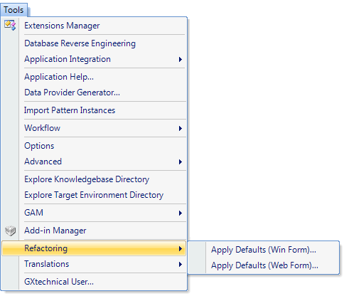

|
It allows applying the default form to several transactions at once. Upon choosing the right option (for Win or Web), the Select Object dialog window will be displayed for you to choose the transaction(s) to which you want to apply the default form. This option is particulary useful for KBs originating in previous versions, whose interface is to be renewed. Note that the conversion process does not renew the forms to keep compatibility.  Scope
See AlsoDynamism between Transaction and Pattern
|
| Backlinks | |
| Apply Default (for Win and Web Forms) | Toc:GeneXus - Table of contents |